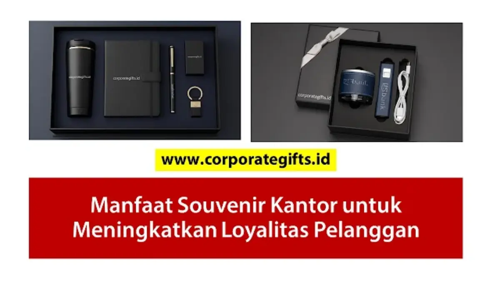

Corporate Gifts ID - Hubungan jangka panjang dengan pelanggan adalah fondasi utama pertumbuhan bisnis yang berkelanjutan. Dalam lanskap persaingan industri yang kian ketat, sekadar menawarkan produk berkualitas atau harga bersaing tidak lagi cukup untuk mempertahankan loyalitas mitra. Perusahaan perlu menghadirkan sentuhan personal yang membuat pelanggan merasa dihargai melampaui hubungan transaksional biasa.
Poin Kunci Souvenir Loyalitas Pelanggan:
- Sentuhan Personal Emosional: Mengubah persepsi hubungan bisnis dari sekadar transaksi angka menjadi kemitraan saling menguntungkan.
- Dampak Resiprositas Psikologis: Pemberian hadiah berkualitas menumbuhkan rasa dihargai yang membuat klien enggan berpindah ke pesaing.
- Brand Exposure Berkelanjutan: Produk fungsional yang dipakai harian menjaga posisi brand tetap berada di top of mind pelanggan.
- Segmentasi Hadiah Bertingkat: Membedakan souvenir operasional umum dengan gift set bespoke untuk akun klien VIP bernilai tinggi.
Peran Souvenir Kantor dalam Customer Retention
Biaya mengakuisisi pelanggan baru (Customer Acquisition Cost / CAC) terbukti 5 hingga 7 kali lipat lebih tinggi dibandingkan mempertahankan pelanggan lama. Di sinilah program corporate gift eksklusif dan souvenir kantor memainkan peran strategis sebagai investasi retensi berbiaya efisien.
Souvenir bukan sekadar barang promosi yang dibagikan massal. Ketika dirancang secara profesional dengan material berkualitas dan kemasan elegan, souvenir bertransformasi menjadi representasi apresiasi mendalam dari manajemen perusahaan.
4 Manfaat Utama Souvenir untuk Loyalitas Klien
Berikut dampak strategis pemberian souvenir kantor yang dirancang tepat sasaran:
- Menciptakan Sentuhan Personal (Personal Touch): Cinderamata yang disesuaikan dengan kebutuhan kerja klien menghadirkan pengalaman unboxing yang hangat dan berkesan.
- Menumbuhkan Rasa Dihargai (Customer Appreciation): Pelanggan merasa kontribusi mereka diakui secara tulus, memperkuat rasa kepemilikan terhadap hubungan kerja sama.
- Meningkatkan Brand Recall Tanpa Terasa Mengganggu: Menggunakan perlengkapan kantor seperti agenda kulit custom setiap hari membuat nama perusahaan Anda selalu teringat secara alami.
- Memicu Rekomendasi Organik (Word-of-Mouth): Klien yang puas dengan hadiah eksklusif cenderung membagikan pengalamannya kepada rekan sejawat atau jaringan profesional mereka.

Kombinasi pulpen metal grafir nama, powerbank fast charge, dan agenda kulit dalam hardbox magnetik berlogo korporat.
Jenis Souvenir yang Terbukti Efektif
Berdasarkan preferensi klien korporat, berikut dua kategori souvenir yang paling sukses meningkatkan loyalitas:
1. Produk Fungsional Produktivitas Harian
Barang yang mendukung aktivitas kerja harian memiliki tingkat retensi tertinggi. Pilihan utama meliputi tumbler stainless steel SUS304, powerbank berkapasitas besar, tote bag kanvas kerja, serta set pulpen rollerball premium.
2. Gift Set Eksklusif untuk Klien VIP & Mitra Utama
Untuk akun klien dengan nilai transaksi strategis, sediakan gift set VIP bespoke dalam kemasan rigid hardbox beludru, plakat kristal apresiasi, atau set desk organizer berbahan kayu sonokeling.
Tabel Segmentasi Souvenir Pelanggan Berdasarkan Nilai
Matriks segmentasi berikut membantu tim procurement mengalokasikan anggaran souvenir secara tepat sasaran:
| Kategori Pelanggan | Rekomendasi Paket Souvenir | Teknik Personalisasi | Momentum Terbaik |
|---|---|---|---|
| Klien Retail / Reguler | Tote bag kanvas + tumbler ramah lingkungan | Sablon logo perusahaan & pesan terima kasih | Program belanja tahunan & event promo |
| Mitra Bisnis B2B Aktif | Smart tumbler LED + notebook agenda kulit A5 | Deboss logo korporat & sleeve kemasan custom | Penutupan proyek & kickoff tahun baru |
| Klien Strategis VIP / C-Level | Executive Director Set (Pen metal, powerbank, tumbler) | Laser grafir nama individu + hardbox beludru | Anniversary perusahaan & hari raya besar |
Tips Memilih Souvenir Loyalitas agar Tepat Sasaran
Agar cinderamata memberikan impresi terbaik, terapkan 4 prinsip kurasi berikut:
- Pahami Profil & Gaya Hidup Penerima: Sesuaikan pilihan produk dengan profesi klien, misalnya perlengkapan tech-savvy untuk startup atau item formal klasik untuk perbankan.
- Jaga Standar Kualitas Tinggi: Hindari barang murah yang mudah rusak karena kualitas souvenir mencerminkan standar profesionalisme brand Anda.
- Terapkan Subtle Branding: Tampilkan logo secara proporsional dan elegan tanpa mendominasi seluruh permukaan produk.
- Rencanakan Momentum Penyerahan: Manfaatkan momen spesial seperti hari ulang tahun perusahaan, penandatanganan MoU, atau apresiasi akhir tahun bersama hampers eksklusif CorporateGifts.ID.
Pertanyaan Seputar Souvenir Loyalitas Pelanggan (FAQ)

Ditulis oleh: Arinda Zakia
Senior Corporate Gifting SpecialistSpesialis kurasi hadiah korporasi VIP dan strategi pengadaan corporate merchandise di CorporateGifts.ID. Berpengalaman lebih dari 7 tahun dalam mendampingi ratusan instansi dan perusahaan swasta membangun customer retention melalui cinderamata berkualitas.
Lihat Profil Lengkap & Panduan Lainnya